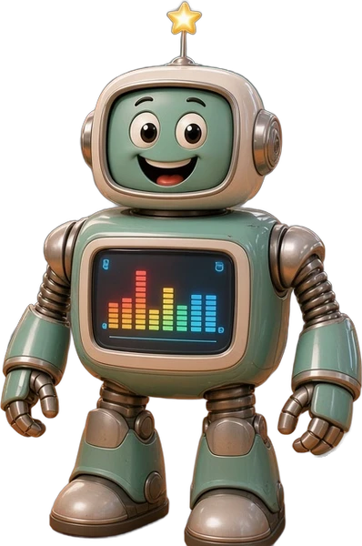
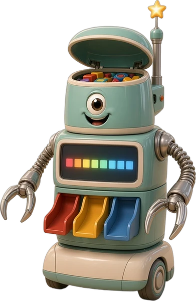
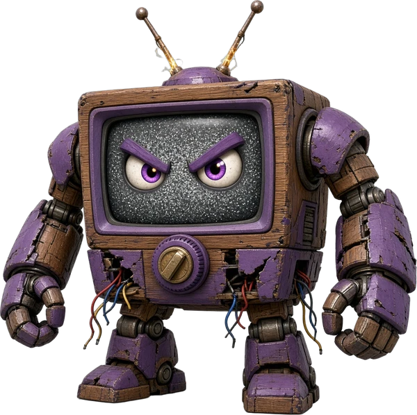
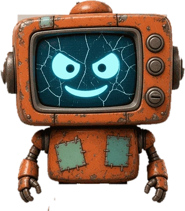
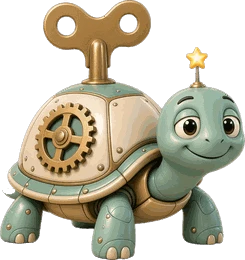

Meet the Characters
Professor Sprocket
Our mint-and-cream robot professor and guide. He teaches the rhythm codes and cheers on the Rhythm Engineers in every level.

The Helper Bot
A little helper bot scrambled by a sneaky virus in Level 1. Every round of ta and ti-ti you clap right reboots him, and he grows!

The Sorter Bot
He got scrambled in Conveyor Corridor (Level 2). Listen to the rhythm backwards, then clap it to un-dizzy him and help him grow.

Big Static
The villain who cut the factory's power and hides a red Virus Code in every round. When you hear it, freeze, and don't clap!

Static Jr.
Big Static's tiny TV sidekick. He escaped into the Rhythm Warehouse in Level 4 and messes up the notes in every room until you fix them with rhythm.

Andante
A robot turtle: slow and steady! Andante shows a slow tempo.
Allegro
The rocket bot: fast! Allegro shows a fast tempo.
Whisper Bot
Whisper Bot loves quiet sounds. Keep your claps soft, or piano, to help him.
Boom Bot
Boom Bot loves big, strong sounds. He stands for forte, which means loud.
Rhythm Engineers
That's you! The class listens, claps, counts and reads rhythms to fix the factory.
Watch the Levels
Level 1
Level 2
Level 3
Level 4: Interactive App
Clap along to the beat, read and create rhythms (rhythm generation) with ta, ti-ti, tika-tika and rest, and battle Static Jr.! Works on a classroom board, tablet, or computer with a microphone.
▶ PLAY LEVEL 4For Teachers
Rhythm syllable cards and classroom tips.
Open the Teacher Page YouTube channel